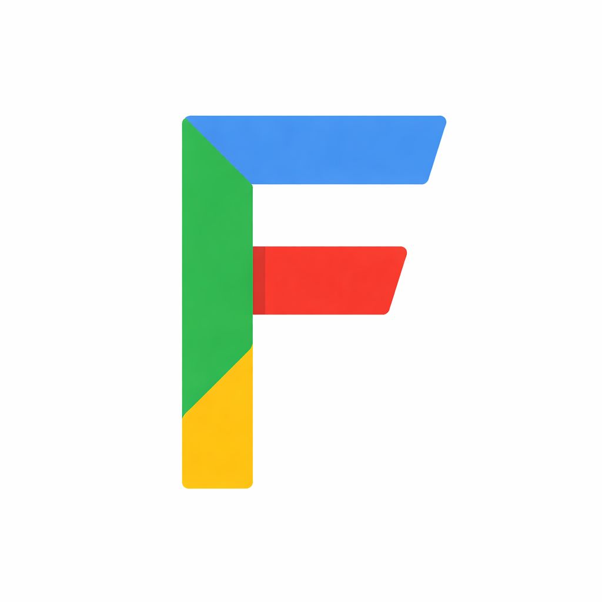
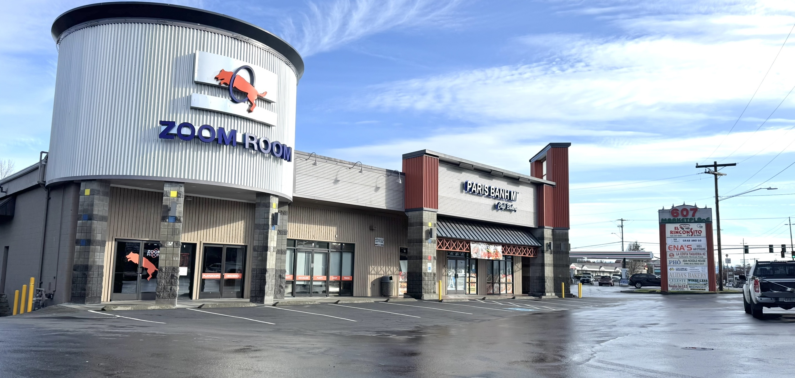

Next.js, TypeScript, OpenAI API, PostgreSQL, Prisma, Vercel
Foodle (AI Recipe Extractor)
Full-stack AI web app that extracts recipes from social media links. Uses OpenAI structured outputs, serverless API routes, and Prisma ORM with PostgreSQL for persistence.

Java, Spring Boot, React, PostgreSQL, AWS S3, OpenAI API
Andromedia (YouTube)
Full-stack video platform with Spring Boot REST API, React frontend, PostgreSQL database, AWS S3 for media storage, and OpenAI-powered content recommendations.

HTML, CSS, JavaScript, Swiper, Formspree
NW Prime Properties
Commercial real estate website with responsive design, interactive property galleries using Swiper, and Formspree-powered contact forms.